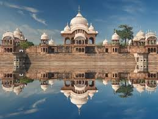

Located in the heart of northern India, Uttar Pradesh is a state renowned for its rich historical legacy, architectural marvels, and cultural diversity. Here's a glimpse into what makes Uttar Pradesh a captivating destination:
Uttar Pradesh is home to a plethora of historical monuments and architectural marvels that bear witness to its glorious past. Explore the iconic Taj Mahal in Agra, a UNESCO World Heritage Site and one of the Seven Wonders of the World, renowned for its breathtaking beauty and exquisite craftsmanship.
Marvel at the majestic forts and palaces of Uttar Pradesh, including the Agra Fort, Fatehpur Sikri, and the majestic Allahabad Fort, each steeped in history and architectural grandeur.
Uttar Pradesh is revered as the "Land of Spiritual Enlightenment" and is dotted with numerous sacred sites and pilgrimage destinations. Visit the holy city of Varanasi, situated on the banks of the sacred Ganges River, and experience the spiritual ambiance of its ghats, temples, and ashrams.
Embark on a pilgrimage to the religious hubs of Uttar Pradesh, including the ancient city of Ayodhya, the birthplace of Lord Rama, and the sacred town of Mathura, the birthplace of Lord Krishna, where you can immerse yourself in devotional practices and rituals.
Immerse yourself in the vibrant cultural tapestry of Uttar Pradesh, where diverse traditions and customs coexist harmoniously. Experience the colorful festivals of the state, including Holi, Diwali, and Eid, where communities come together to celebrate with fervor and joy.
Witness traditional art forms such as Kathak dance, Hindustani classical music, and the intricate craft of Chikankari embroidery, showcasing the artistic richness and cultural diversity of the region.
Indulge in the culinary delights of Uttar Pradesh, known for its rich and diverse cuisine influenced by Mughal, Awadhi, and Bhojpuri flavors. Sample traditional dishes such as Lucknowi kebabs, Awadhi biryani, and Benarasi paan, served with aromatic spices and flavors.
Explore the bustling streets and vibrant markets of cities like Lucknow and Kanpur, where you can savor delicious street food delicacies such as chaat, samosas, and jalebis, prepared fresh and bursting with flavors.
Whether you're fascinated by historical monuments, spiritual enlightenment, or cultural traditions, Uttar Pradesh offers a diverse range of experiences for every traveler. Plan your journey to this enchanting state and immerse yourself in the history and heritage of Uttar Pradesh.
